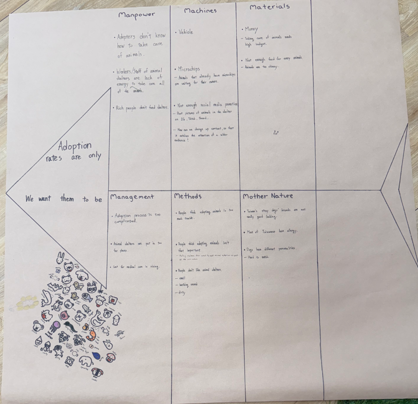
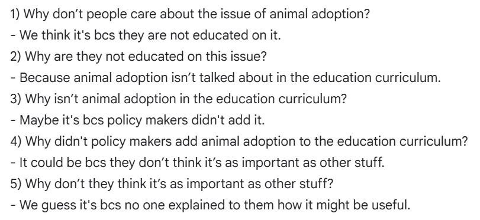
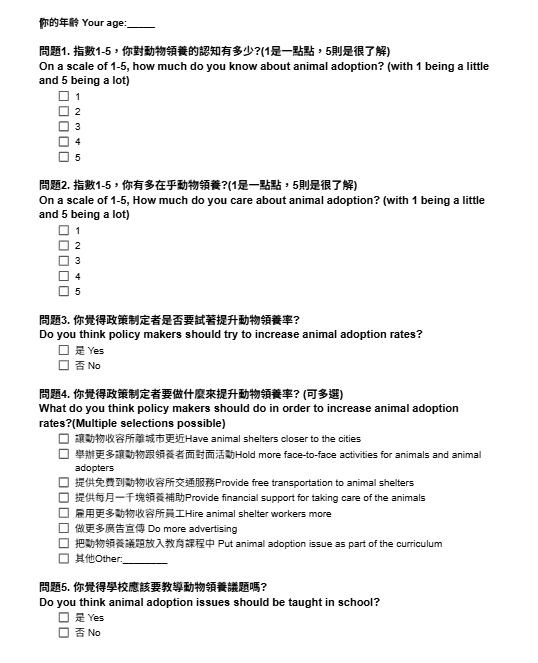

Nadine
Nadine
About Our Research
Learn how to do research
We learn how to do research and conduct surveys this semester. The main problem is: adoption rates are too low, we want them to be higher. We analyzed this problem with the fish bone and 5 whys. We also used our surveys questions to gather the public's opinion.
Introduction of Our Research Topic
Fish Bones
We drew the fish bones that include methods, material, mother nature, machines, management, and manpower.

5 Whys
We came up with some questions for our research. We put all the questions together, discuss those questions with the instructor , and revise the question with instructor advice.

Practicing with Da'an Students
Survey
